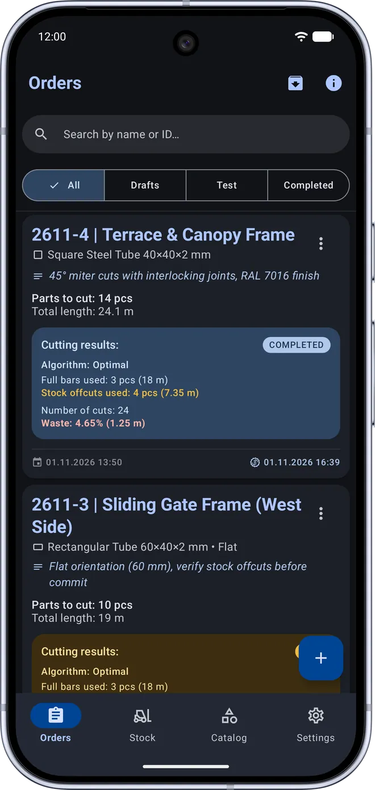
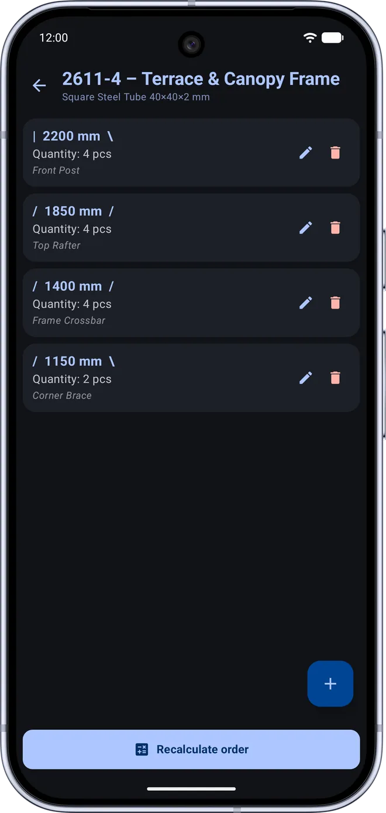
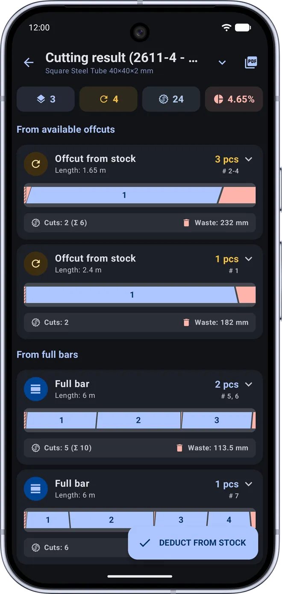
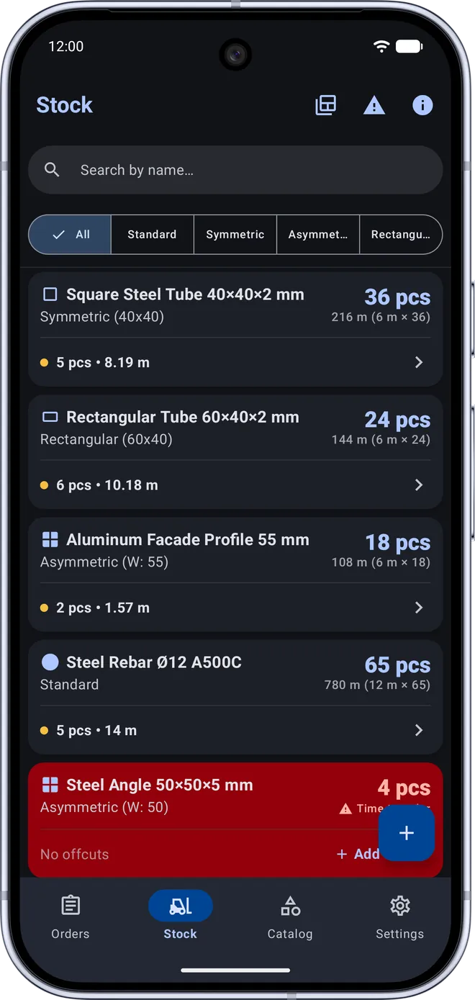

Minimize scrap waste —
maximize material yield.
Professional 1D cutting optimization for square and rectangular tubing, aluminum & PVC extrusions, round pipes, rebar, and timber. Configure 45° and 90° miter angles, blade kerf, and bar edge trim, manage warehouse bars and usable remnants, and export shop-ready PDF cutting diagrams and Excel sheets in seconds.

Screenshot placeholder:assets/linear-cutting/screen-main-en.png
Why Guesswork Cutting Leads to Costly Losses
Prices for steel tubing, aluminum extrusions, and PVC profiles keep rising. Every uncompensated 45° miter cut or forgotten warehouse offcut directly erodes your profit margin.
- • Ignored kerf & end trim: forgetting 3–4 mm blade thickness and initial bar end squaring makes the final workpiece on a bar undersized.
- • Wasted length on 45° miters: cutting square, rectangular, or asymmetric profiles at 45° without interlocking adjacent cuts wastes tens of centimeters per bar.
- • Unchecked stock & dead remnants: usable 80–200 cm offcuts pile up in corners while operators keep pulling fresh 6-meter bars from the rack.
- • 3 Optimization Engines with side-by-side comparison: choose between instant Greedy (FFD), evolutionary Genetic, and mathematically exact Branch & Bound.
- • Smart 45° miter nesting & 4 profile types: accounts for round, symmetric, asymmetric, and rectangular profiles (flat or on-edge) with automatic rotate (🔄) and flip (↔️) operator cues.
- • Closed-loop warehouse control: prioritizes existing remnants first, deducts committed bars from inventory, returns newly created usable offcuts to stock, and logs every transaction.
An Engineering Optimizer & Inventory System on the Shop Floor
45°/90° Miters, Kerf & 4 Profile Types
Factor in saw blade kerf, initial bar edge trim, and profile cross-section geometry: round stock, symmetric square tube, asymmetric window/facade extrusion, and rectangular tubing (cut flat or on-edge).
Warehouse Stock, Offcuts & History
Track full bars and usable remnants with low-stock alerts. Run non-destructive "Test Runs" for quotes, or commit orders to automatically deduct stock, save new offcuts, and roll back orders whenever needed.
PDF Cutting Maps, Excel & QR Labels
Visual cutting diagrams for every stock bar with angle geometry, total weight, and material cost. Export shop-ready PDF reports, Excel spreadsheets, and printable thermal labels with QR codes for parts and remnants.
3 Engines & One-Tap Comparison
Compare Fast (Greedy FFD), Genetic, and Exact (Branch & Bound) algorithms side by side on the order screen to see required stock bars, waste percentage, and calculation time before making a single cut.
100% Offline & Excel Cut List Import
Operates reliably inside metal workshops, hangars, and job sites without internet connectivity. Import part specifications directly from Excel (.xlsx, .csv) and back up your entire database to JSON.
Local Data Privacy & 11 Languages
No mandatory accounts or cloud uploads: your warehouse database, pricing, and cutting specifications stay strictly on your device. Localized in 11 languages with high-contrast dark and light industrial themes.
Workshop-Ready Interface
High-contrast industrial theme, clear visual miter indicators, and instant switching between warehouse stock and cutting batches.

screen-input-en.pngOrder setup & 45° angles
Order Setup, 45° Angles & Algorithms

screen-layout-en.pngVisual cut layout
Visual Cutting Map & PDF/Excel Export

screen-stats-en.pngWarehouse & remnants
Warehouse Stock, Offcuts & History
Frequently Asked Questions
What profile types and angle cuts does Linear Cutting support?
The app supports 4 profile geometries: Round stock (rebar, round pipe), Symmetric profiles (square tubing), Asymmetric profiles (PVC window extrusions, aluminum facade profiles, steel angles), and Rectangular tubing with selectable cut orientation (laid flat or standing on edge). Each part can have 90° or 45° left/right cuts, and the optimizer automatically nests matching 45° miters with visual rotate (🔄) and flip (↔️) cues.
How do warehouse tracking, "Test Run" mode, and remnant reuse work?
You can optimize orders in 3 stock modes: "Whole Bars Only", "Offcuts + Whole Bars", or "Offcuts Only". Running a "Test Run" lets you estimate material requirements without modifying warehouse balances. When you tap "Deduct from Stock", the app automatically deducts the used bars and remnants, adds newly created usable offcuts (above your minimum remnant threshold) back into inventory, and logs the transaction with full one-tap rollback support.
What is the difference between the 3 optimization algorithms, and how is kerf handled?
Saw blade kerf thickness is automatically added to every cut, and optional bar edge trim is deducted from the start of each bar. You can choose from 3 engines: Fast (Greedy FFD) for instant layouts, Genetic for complex multi-length batches, and Exact (Branch & Bound in PRO) for guaranteed minimum waste. The built-in "Compare Algorithms" dialog lets you evaluate all three before cutting.
Can I import cut lists from Excel and print cutting diagrams or QR labels?
Yes. You can import part lists directly from Excel (.xlsx or .csv) files, export finished cutting layouts as detailed PDF reports (including bar diagrams, weight, and cost breakdown) or Excel workbooks, and generate printable PDF sheets of thermal labels with QR codes for cut parts and warehouse remnants — all 100% offline.
Bring Precision to Your Cutting List & Warehouse
Install Linear Cutting for free and start saving metal, extrusions, and shop floor time on your very next production batch.